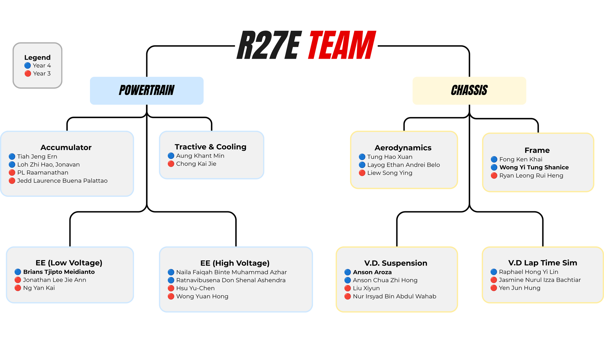
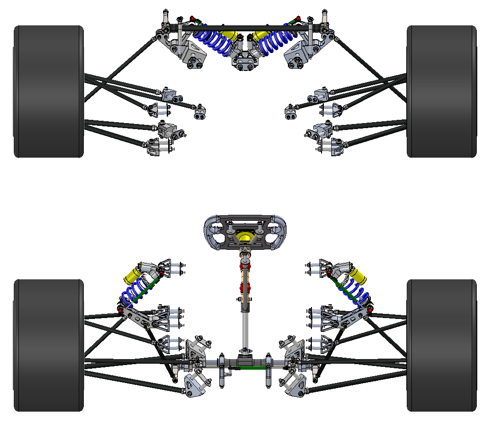
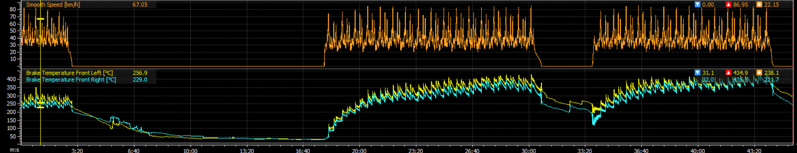
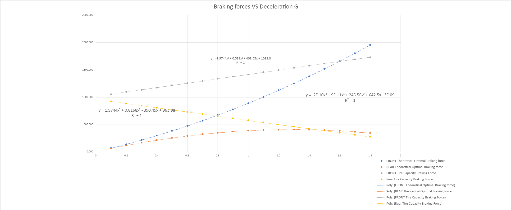
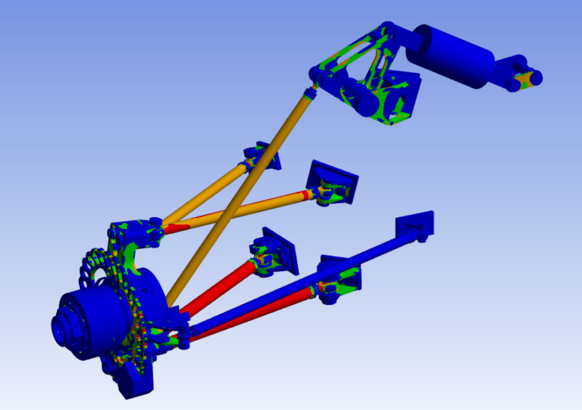
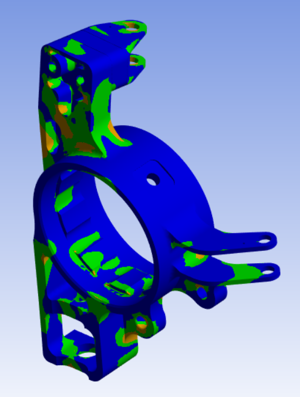
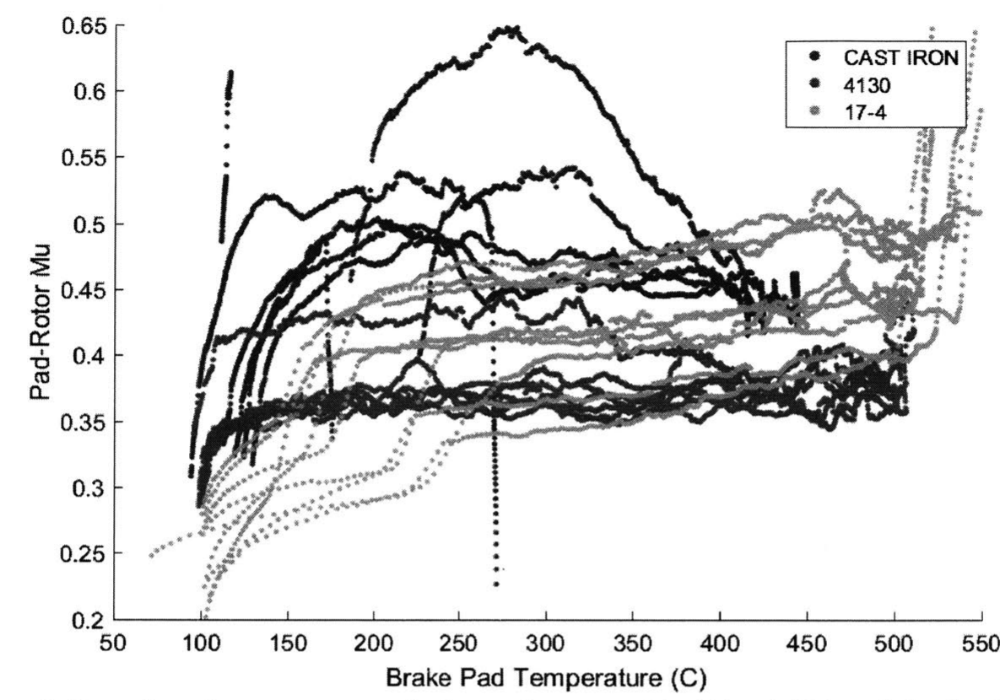
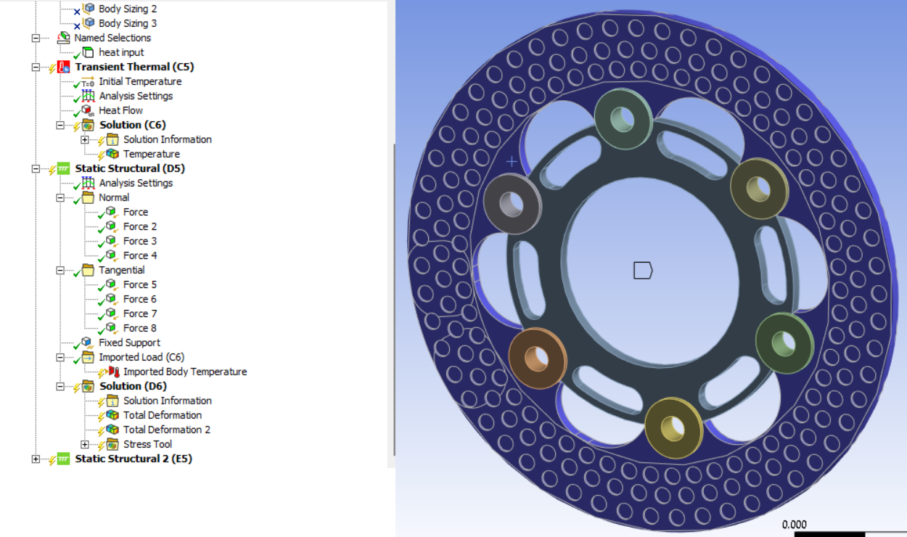

Optimisation of Suspension and Brakes System for FSAE
Anson Chua Mechanical Engineering · NUS Formula SAE
1. FSAE Overview & Competition Goals
Within the NUS Formula SAE organizational structure, the vehicle development is divided into two primary branches: Powertrain (Accumulator, Tractive, Low Voltage, and High Voltage) and Chassis (Aerodynamics, Frame, Vehicle Dynamics Suspension, and Vehicle Dynamics Laptime Simulation), alongside Future Systems development. The primary objective of the suspension system is to keep the tyres at an optimal angle relative to the ground to maximize all driving forces acting on the racecar.

Figure 1: R27e team structure.
Project objective and scope. This project designs the R27e brake system and the brake corner components it depends on (upright, hub and brake rotor). It has two objectives. The first is to minimise mass: a rear corner assembly under 1.20 kg, 18% lighter than R26’s 1.47 kg, that can still lock all four wheels. The second is to keep the brakes in their operating temperature window. Pad friction depends on temperature [2], so the brakes should warm up quickly, which a lower rotor mass helps, and then stay below the 350 °C limit through Endurance. R26's front brakes reached a recorded maximum of 567 °C. The two objectives pull against each other, because a lighter rotor stores less heat and runs hotter. Resolving this needs a design method that predicts rotor cooling (Section 5.2). Hydraulic sizing, rotor design, and structural and thermal validation are in scope. Suspension geometry and the regenerative braking control strategy are outside the scope, apart from making the hydraulic system work alongside regenerative braking.
1.1. R27e Suspension Architecture & Subsystems
The R27e suspension system integrates six core mechanical subsystems working in tandem to manage vehicle loads and driver inputs. The interactive model below shows the front and rear assemblies, with each key part labelled by name.

Figure 2: Interactive CAD model of the R27e front and rear suspension, labelled by part. Drag to rotate, scroll to zoom, right-click and drag to pan. Hover over or tap a label, a part or a subsystem below to highlight it.
Figure 2: R27e front and rear suspension CAD assemblies. Source: 27 Suspension, slide 3. The online report includes an interactive 3D model.
1.2. Team Competition Targets & System Goals
The overarching team competition goal is to achieve a Top 10 placement overall by maintaining strong scores in static events and placing Top 10 in dynamic events through the following performance targets:
Dynamic Event / Metric
Target Performance
Acceleration
4.0 s
Skidpad
4.99 s
Autocross
50.6 s*
Endurance
889 s*
Efficiency
3.8 kWh
To directly support these vehicle-level benchmarks, the subsystem goals are defined as follows:
Steering Goal: Maximize lateral acceleration to achieve the 4.99 s skidpad target while ensuring driver steering effort and fatigue remain within an acceptable range to finish the 22 km Endurance event.
Braking Goal: Ensure consistent, high-G braking performance across all dynamic events, directly supporting the Top 10 competition target.
2. Brake System Problem Statement & Objectives
Designing a high-performance braking system for a Formula SAE electric vehicle requires resolving the fundamental trade-off between thermal heat capacity and unsprung rotational mass.
The competition rules set the baseline. The brake system must act on all four wheels through two independent hydraulic circuits, and must lock all four wheels in the brake test. Electric vehicles must pass this test with the tractive system switched off [1]. Regenerative braking may use only the first 90% of pedal travel, so the hydraulic system alone must be able to stop the car [1]. The Endurance event covers about 22 km at average speeds of 48–57 km/h, with top speeds near 105 km/h [1], so the rotors absorb many stops in quick succession with little time to cool.
The value of this project is to meet these requirements with less mass than the R26 design. Lower unsprung mass helps the tyre stay in contact with the track over bumps [3], and lower rotor temperatures reduce brake fade [2]. Compared with R26, the design changes the rotor from elongated slots to circular perforations (Figure 8) and checks the rotor at several angular positions relative to the pads, rather than at a single position.
Figure 3: Interactive R27e rear brake corner, labelled by part.
2.1. Thermal Fade & Unsprung Mass Penalties
Two primary engineering bottlenecks govern the brake system design:
Endurance Thermal Bottleneck: 22 km of continuous, repeated braking during the Endurance event generates extreme temperatures at the brake rotors. Excessive heat leads to lower braking efficiency via brake fade and structural brake rotor warpage [2]. Front brake temperatures logged on the R26 car's MoTeC data logger reached 567 °C, the highest recorded on R26 and well above the 350 °C target (Figure 4; Appendix B).
Unsprung Mass Penalty: Oversized brake components heavily penalize unsprung mass and rotational inertia. This results in degraded vehicle dynamics: loss of mechanical tyre grip over bumps, higher steering effort (harder to turn), and slower transient suspension and acceleration response [3].

Figure 4: R26 brake shutoff regen test, 10 May 2026 (MoTeC). Rear wheel speeds (top) and front brake temperatures (bottom), peaking at 567.0 °C (left) and 542.0 °C (right).
To overcome both unsprung mass penalties and thermal fade, the following quantitative design specifications were established for the R27e braking system:
Design Parameter
Target Specification
Engineering Rationale / Benchmark
Peak Deceleration
1.50 G
Ensure optimal brake balance of the car and full 4-wheel lock-up capability.
Rear Corner Assembly Mass
Less than 1.20 kg
18% lighter than the R26 rear corner (1.47 kg; Appendix A.8).
Operating Front Rotor Temp
350 °C Ceiling
Keeps the rotor within its usable temperature range and limits heat flow into the pads, hub and brake fluid. R26 reached 567 °C.
To reach 1.20 kg, the 270 g saving is allocated to the parts being redesigned. The upright and rotor each have a target about 43% lighter than R26, while the hub, wheel bearings, tripod liners and preload plate carry over (Appendix A.8).
The optimization methodology follows a rigorous five-stage engineering workflow:
Torque Requirements: Calculating the exact required braking torque for both front and rear axles.
Component Selection: Sizing dual master cylinders and selecting friction pad materials and brake rotor alloys.
SolidWorks CAD: Detailed 3D modeling of custom components including the upright, hub, and brake rotor.
ANSYS Structural / Thermal FEA: Conducting finite element stress and thermal analysis to optimize strength-to-weight ratios and heat dissipation.
Why this approach. Scaling the R26 brakes would carry over R26's mass and could not show whether a lighter design still locks all four wheels. First-principles calculation links every hardware choice to the tyre grip limit. Hand calculations miss stress concentrations at the rotor cutouts and upright mounts, and testing alone would need several manufactured iterations, so FEA refines the design before manufacture and physical testing (Section 5) confirms it.
3. First-Principles Brake System Calculations
Rather than relying on empirical heuristics, the braking architecture was derived from first-principles vehicle dynamics to match hydraulic braking torque supply against tire tractive capacity demand.
3.1. Tire Capacity vs. Optimal Braking Force
Tyre capacity (supply) is compared with the force each axle needs (demand) across deceleration levels. Weight transfer moves load onto the front axle under braking [3], so the front tyres provide most of the stopping force.
Tyre capacity comes from Tire Test Consortium (TTC) data for the Hoosier 18.0×6.0-10 R20, fitted as a cubic in normal load and scaled by 2/3. The scaling allows for the abrasive test surface, which gives more grip than a real track. Total braking force follows Newton's second law (F = ma). Goal Seek finds the deceleration at which the front and rear tyre capacities together equal the force required: 1.50 G. At this point both axles reach their grip limit almost together (Figure 5), which is the ideal brake balance.

Figure 5: Braking force required and tyre capacity per wheel against deceleration. Solid lines show force required; dashed lines show tyre capacity. Source: 27 Brakes Calculations workbook.
3.2. Force, Pressure & Hardware Sizing
From the 1.50 G limit, the forces, torques and line pressures were calculated per wheel, and the master cylinders were sized (wheel torque uses the 0.197 m rolling radius). The full working is in Appendix A.
Category
Parameter
Calculated Value
1. Vehicle Dynamics
Peak Braking Deceleration (Goal Seek)
1.50 G
Front Longitudinal Braking Force (per wheel)
1,522 N
Rear Longitudinal Braking Force (per wheel)
385 N
2. Force & Pressure
Front Braking Torque (per wheel)
300 Nm
Rear Braking Torque (per wheel)
76 Nm
Front Hydraulic Inline Pressure
3.07 MPa
Rear Hydraulic Inline Pressure
1.85 MPa
3. Hardware Sizing
Master Cylinder Bore Size (Front / Rear)
15.88 mm / 22.2 mm (7/8 in)
Front Share of Braking Force at the Limit
0.80
Driver Pedal Effort (4:1 pedal ratio)
332 N
4. Structural & Thermal FEA Analysis
To ensure structural integrity under extreme racing loads while meeting the sub-1.20 kg corner mass target, finite element analysis (FEA) was performed in ANSYS across both structural and thermal domains.
Prototypes developed this semester. The prototypes at this stage are digital. SolidWorks models of the upright, hub and prototype rotor define the geometry to be manufactured, and ANSYS models of these parts act as virtual test specimens. The purpose of these models is to confirm strength and thermal performance, and to remove excess mass, before parts are machined in the manufacturing phase (Section 5.3).
The structural tests check that the upright and suspension assembly reach a minimum factor of safety of 2.0 in every load case, and find low-stress material to remove. The quarter-car (Qcar) suspension and upright assembly was simulated across 9 distinct extreme load cases:
Pure Acceleration, Pure Braking, and Pure Cornering
Combined Acceleration while Cornering, and Braking while Cornering
By evaluating the simulated stress distributions across the upright and suspension linkages, excessive low-stress material was removed to optimize component mass, while highly stressed mounting features were reinforced to guarantee a minimum Factor of Safety (FOS) of 2.0.


Figure 6: ANSYS structural analysis contour plots of the suspension assembly (left) and upright (right). Source: 27 Suspension, slide 14.
4.2. Rotor Geometry & Material Selection
The brake rotor geometry was engineered around three core objectives: optimizing weight, allowing uniform radial and circumferential thermal expansion without inducing internal thermal stresses, and maximizing convective surface area for rapid cooling to lower operating temperatures.
A weighted decision matrix (scored 1 = Worst to 3 = Best) was used to evaluate three candidate rotor materials:
Selection Criteria
Cast Iron
4130 Steel
17-4PH Stainless Steel
Density
3
1
1
Deformation Resistance
1
3
3
Thermal Conductivity
3
2
1
Cost
3
2
1
Friction (μ) Dependency on Temp
1
3
2
Ductility
1
2
3
Corrosion Resistance
1
1
3
Strength at 500 °C
1
2
3
Net Score
14
16
17 (Selected)
Further research after the interim presentation added two criteria that the original matrix missed: corrosion resistance and strength at the rotor's peak temperature. This changed the selection from 4130 to 17-4PH stainless steel. At 500 °C, 17-4PH keeps a yield strength of about 539 MPa, against 279 MPa for 4130 (MMPDS-11 data quoted in [7]). It therefore resists softening, warping and coning far better at the 500–570 °C temperatures logged on R26. Its corrosion resistance is comparable to 304 stainless steel [5], so the friction faces stay free of rust without a coating that would wear off under the pads, and it is the most ductile option. The trade-offs are low thermal conductivity, about 18 W/m·K [6], and friction consistency. In dynamometer tests at MIT, 17-4PH gave the least consistent friction coefficient of the three materials, (Figure 7), although only one pad compound was tested and the study recommended retesting with other pads [7]. Friction-versus-temperature testing with the R27e pads is therefore part of the plan (Section 5.1).

Figure 7: Dynamometer friction coefficient against pad temperature for three rotor materials with Wilwood CM pads; light grey is 17-4PH. Reproduced from Mora (2018), Figure 9 [7].
The thermal model has three known limitations, addressed in Section 5: the cooling rate varies with vehicle speed rather than being constant; airflow inside the wheel is turbulent and would need CFD to characterise; and uneven pad–rotor contact from micro-warpage is not modelled.
To account for rotor rotation during braking, a multi-step simulation methodology was implemented:
Calculate peak heat flux generated during maximum deceleration to simulate hard braking and determine the maximum brake rotor temperature.
Simulate subsequent braking from average track speed using the maximum rotor temperature as the initial thermal condition.
Repeat the thermal and structural simulations across discrete angular orientations of the brake rotor at 15°, 30°, 45°, 60°, and 75° to accurately stress-test the slotted cutout geometry as the rotor spins past the caliper pads.

Figure 9: ANSYS rotor setup (results in progress). Transient thermal analysis applies braking heat at the pad contact; the temperatures feed a structural analysis with normal and tangential pad forces and fixed mounting bosses.
5. Problems, Shortcomings & Project Plan
Semester 1 has focused on design and simulation. The remaining work addresses the shortcomings below, then moves into manufacturing and physical testing.
5.1. Problems Faced & Proposed Resolutions
Problem or shortcoming
Effect on the results
Proposed resolution
A rotating rotor cannot be modelled directly in a static thermal analysis.
Hot spots under the pads would be missed.
Resolved: the rotor is analysed at 15°, 30°, 45°, 60° and 75° positions (Section 4.3).
The current rotor design method applies the worst-case braking heat to the rotor with no cooling.
Temperatures are over-predicted, so rotor mass cannot be reduced with confidence.
Build a transient thermal model that includes cooling, validated against R26 data (Section 5.2).
Airflow inside the wheel is turbulent and unknown.
The cooling rate used in the simulation is uncertain.
Bound the result with low and high cooling cases now, and refine it with CFD or test data later.
The calculations are not yet validated on the car.
Real brake balance and lock-up behaviour are unconfirmed.
Brake tests with the tractive system off to confirm four-wheel lock-up, then bias tuning and integration with regenerative braking.
With a 25.4 mm rear master cylinder, the brake-test setting (0.39 front share) is beyond the bias bar's 0.41 limit.
The bar cannot reach the brake-test setting.
Resolved: a 22.2 mm (7/8 in) rear master cylinder moves the setting to 0.46 and lowers pedal force to 332 N.
The friction consistency of 17-4PH with the R27e pads is unverified; published dynamometer data used a different pad [7].
Pedal effort and brake balance may vary as the brakes heat up.
Measure friction coefficient against temperature with the R27e pads, on a dynamometer or from logged track data, before the design is frozen.
The 1.20 kg target needs the upright and rotor to be about 43% lighter than R26.
The target may not be achievable within the safety and temperature limits.
Use the FEA and validated thermal model to find the mass that can be removed. If needed, revise the target with that evidence rather than lowering the FOS of 2.0 or the 350 °C limit.
Further iterations of the rotor cutout geometry will also be analysed to reduce mass while keeping the highest factor of safety.
5.2. Thermal Simulation & Validation Plan
The current method applies the heat from a worst-case stop to the rotor, then adds caliper and friction loads. Because cooling between stops is ignored, the method cannot show how much material can be removed before the rotor overheats. The proposed model treats the rotor as a single thermal mass, following the approach used at MIT [7]:
m c dT/dt = Qbrake(t) − (T − Tamb) / Reff
Here Qbrake is the braking heat flowing into the rotor and Reff is its effective thermal resistance to the surrounding air. The model is validated against R26 data from the MoTeC logger in four steps:
Calibrate: fit Reff to the cooling sections of one logged session, where temperature decays exponentially with no braking.
Predict: run the model for a different session, using its logged speed and brake pressure to calculate Qbrake.
Validate: compare predicted and logged rotor temperatures, including the 567 °C peak. The target is peak temperature within ±10%.
Apply: run the validated model over an Endurance lap profile for R27e rotor candidates, and reduce mass until the predicted peak reaches the 350 °C limit with margin.
Using separate sessions for calibration and validation means the model is tested on data it was not fitted to.
5.3. Project Plan & Milestones
The project runs from July 2026 to May 2027 in four phases, each ending in a measurable milestone:
Project phase
Timeline
Milestone
1. Design
July 2026 – October 2026
Brake calculations complete; upright, hub and rotor CAD frozen
2. Simulation
August 2026 – November 2026
Minimum FOS of 2.0 in all 9 load cases; thermal model validated against R26 MoTeC data; front rotor predicted below 350 °C
3. Manufacture
November 2026 – December 2026
Rotors and uprights machined; corner assembly weighed against the 1.20 kg target
4. Assembly and Testing
December 2026 – May 2027
Four-wheel lock-up demonstrated; brake bias tuned; regenerative braking integrated; R27e rotor temperatures logged and compared with the thermal model
References
SAE International. Formula SAE Rules 2026, Version 1.0. Brake system, brake test and endurance event requirements.
Limpert, R. (2011). Brake Design and Safety (3rd ed.). SAE International.
Milliken, W. F., & Milliken, D. L. (1995). Race Car Vehicle Dynamics. SAE International.
NUS Formula SAE (2026). 27 Suspension [internal team presentation]. Source of Figures 2, 6 and 8.
Mora, L. A. (2018). Design of a FSAE Braking System [BSc thesis]. Massachusetts Institute of Technology.
Appendix A. Brake Calculation Chain
This appendix sets out the full working behind Section 3, from tyre data to pedal force. All values are per wheel unless stated otherwise, and are taken from the 27 Brakes Calculations workbook (V5, sheet “Tire Forces (new)”). The appendix is excluded from the word count.
A.1. Inputs
Parameter
Symbol
Value
Car mass with driver
m
260 kg
Static front weight fraction
wf
0.5038
Wheelbase / CG height
L / h
1,558 mm / 300 mm
Effective rolling radius (diameter 394 mm)
rw
197 mm
Tyre
Hoosier 18.0×6.0-10 R20 (TTC data, scaled by 2/3)
Front caliper: ISR 22-048, opposed 4-piston
Ap,f
4 × Ø25 mm pistons (490.9 mm² each)
Rear caliper: AP CP4226-2S0, opposed 2-piston
Ap,r
2 × Ø25.4 mm pistons (506.7 mm² each)
Pad friction coefficient, front / rear
μf / μr
0.60 / 0.55
Rotor outer diameter, front / rear; pad swept height
190.75 mm / 172 mm; 25 mm
Effective rotor radius, front / rear
re
82.9 mm / 73.5 mm
Master cylinder bore, front / rear
Df / Dr
15.88 mm / 22.2 mm (7/8 in)
Pedal ratio; bias bar length
ip
4 : 1; 2.6 in (front force share range 0.41–0.59)
A.2. Tyre Loads and Capacity
Normal load on each wheel at deceleration G, including longitudinal weight transfer:
Fz,f = ½ [ m g wf + m G g h / L ], Fz,r = ½ [ m g (1 − wf) − m G g h / L ]
Peak longitudinal tyre force is a cubic least-squares fit to the TTC data (50 points, 0–2,000 N), scaled by 2/3 for the difference between the test surface and a real track:
Goal Seek finds the deceleration at which the front and rear tyres together supply exactly the force required for one side of the car:
Fx,max(Fz,f) + Fx,max(Fz,r) = ½ m G g
Quantity
Front
Rear
Normal load at the limit
1,009.8 N
265.5 N
Braking force (= tyre capacity)
1,522.3 N
385.1 N
Result
G = 1.496; total per side 1,907.4 N; front share 0.80
A.4. Torque, Caliper Force and Line Pressure
Each wheel's braking force gives the brake torque, then the tangential force at the rotor's effective radius. For an opposed caliper with n pistons, every piston pushes one pad face, so Ft = n μ p Ap:
T = Fxrw, Ft = T / re, p = Ft / (n μ Ap)
Step
Front
Rear
Brake torque T
1,522.3 × 0.197 = 299.9 Nm
385.1 × 0.197 = 75.9 Nm
Tangential force at caliper Ft
299.9 / 0.0829 = 3,618.6 N
75.9 / 0.0735 = 1,032.2 N
Clamp force per piston Ft / (n μ)
3,618.6 / (4 × 0.60) = 1,507.7 N
1,032.2 / (2 × 0.55) = 938.4 N
Line pressure p
1,507.7 / 490.9 mm² = 3.07 MPa
938.4 / 506.7 mm² = 1.85 MPa
A.5. Master Cylinders, Bias Bar and Pedal Force
The bias bar splits the pushrod force between the master cylinders, and each cylinder's pressure is that force divided by its bore area. For the brake test the bar is set rear-biased (front share 0.41, rear 0.59), so the bore area ratio needed is:
Ar / Af = (0.59 / 0.41) × (pf / pr) = 1.430 × (3.07 / 1.85) = 2.37 ⇒ Dr = 15.88 × √2.37 = 24.5 mm. A 22.2 mm (7/8 in) bore is selected: a smaller rear bore raises rear pressure for a given pushrod force, so the bar setting moves back inside its range.
Step
Value
Front pushrod force pfAf (198.1 mm²)
608.3 N
Rear pushrod force prAr (387.9 mm²)
718.4 N
Total pushrod force; driver pedal force at 4 : 1
1,326.8 N; 331.7 N
Bias bar setting needed (front share)
608.3 / 1,326.8 = 0.459, within the bar's 0.41–0.59 range (2.7 mm from centre)
A.6. Master Cylinder Stroke
Caliper piston travel is taken as 0.4 mm (0.2 mm seal rollback plus 0.2 mm high-pressure compliance, assumed). Master cylinder stroke is that travel multiplied by the ratio of total caliper piston area to bore area, plus 1.5 mm port dead stroke (assumed):
Step
Front
Rear
Area ratio
8 × 490.9 / 198.1 = 19.83
4 × 506.7 / 387.9 = 5.22
Active stroke
0.4 × 19.83 = 7.93 mm
0.4 × 5.22 = 2.09 mm
Total stroke
9.43 mm
3.59 mm
A.7. Regenerative Braking Requirement
The brake test is run with the tractive system off, so the hydraulic system alone is sized to lock all four wheels. In racing the bias bar is moved to 50/50 and regenerative braking makes up the rear torque. At 50/50 the rear master cylinder receives the front pushrod force (608.3 N), giving a rear line pressure of 608.3 / 387.9 mm² = 1.57 MPa and a clamp force of 1.57 × 506.7 = 794.5 N per rear piston:
Tr,mech = 794.5 × 2 × 0.55 × 0.0735 = 64.2 Nm
Step
Value
Rear torque required per wheel
75.9 Nm
Regenerative torque per rear wheel
75.9 − 64.2 = 11.6 Nm
Rear axle total; at the motor (3.4 : 1 reduction)
23.3 Nm; 6.8 Nm
A.8. Rear Corner Mass Baseline & Budget
The mass target is measured against the weighed R26 rear components, per corner (half of each car-set total):
Component
R26 car set (g)
Per rear corner (g)
Rear upright (×2)
738.80
369.40
Rear hub (×2)
718.82
359.41
Rear wheel bearings (×4)
768.00
384.00
Rear rotor (×2)
511.80
255.90
Tripod liners (×6)
145.62
72.81
Preload plate (×2)
57.94
28.97
Total
2,940.98
1,470.49
A 1.20 kg target is therefore a reduction of 1 − 1,200 / 1,470.5 = 18.4%, or 270.5 g per corner.
The saving is budgeted across the parts being redesigned. The hub, wheel bearings, tripod liners and preload plate carry over at their R26 masses (845.2 g). The full 270.5 g is shared in proportion to mass between the upright and rotor, so each needs a 43.3% reduction. These are design targets, not measured R27e masses:
Component (per rear corner)
R26 (g)
R27e target (g)
Saving (g)
Planned route
Upright
369.4
209.6
−159.8
Remove low-stress material using the 9 FEA load cases
Rotor
255.9
145.2
−110.7
Size cutouts and thickness with the validated thermal model (Section 5.2)
This appendix explains the brake temperature data behind the thermal problem statement in Section 2.1. All temperatures were recorded on the R26 car with its MoTeC data logger, which logs front and rear brake temperatures alongside wheel speeds and brake pressures. The appendix is excluded from the word count.
B.1. Sessions Reviewed
Session
Front left peak
Front right peak
Rear peak
Brake shutoff regen test 5, 10 May 2026 (about 6.5 min)
567.0 °C
542.0 °C
172.6 °C
Endurance (22 and 31 lap stints), 15 June 2026
434.9 °C
435.5 °C
153.8 °C
The brake shutoff regen test is the highest brake temperature recorded on R26, so it is used in Figure 2. Both sessions exceed the 350 °C target for R27e, so the problem is not limited to one session.
B.2. Reading the Data
Temperature builds with every stop. Each heavy braking event adds a step of about 30–90 °C, and the rotor does not cool back to its starting temperature before the next stop. The temperature therefore climbs from about 250 °C to over 560 °C within about 3 minutes of running. This is the cooling behaviour that the current worst-case heat-dump method ignores (Section 5.2).
The peak occurs while the car is running. The 567 °C maximum is reached at about 4:50, during a braking event, not after the car stops. Readings after the car stops at about 5:40 are not used.
Front brakes run much hotter than rear. Front peaks are about three times the rear peaks, consistent with the 0.80 front share of braking force at the limit (Section 3.2).
Endurance stabilises lower. Over the longer Endurance stints, front temperatures level off at about 400–435 °C, because braking is less severe and the brakes have more time to cool between stops.
B.3. Use in the Project
These logs set the problem that R27e must solve: a lighter rotor must stay below 350 °C in conditions where R26 reached 435–567 °C. They also provide the calibration and validation data for the thermal model in Section 5.2, with one session used to fit the cooling term and another used to check the prediction.
Appendix C. AI Usage Declaration
Claude (Anthropic) assisted with the website code, editing of the report text, and checking of the calculations. All engineering data, models, calculation methods and design decisions are my own, and I have reviewed all content.